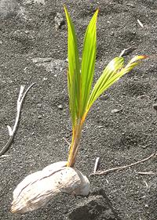

SAFARI
Users
- Palm Products - only the edible ones.
- Coconut Products - only the edible ones.
- Working with Coconuts - details of types and how to use them.
Palm Products
Most of these come from a type of palm called a "Toddy Palm" or "Sugar Palm". Confusingly, there are a whole bunch of palm species called by these names, and even the coconut palm can qualify. For details see our Toddy Palm page.
Palm Sugar
This flavorful unrefined sugar, made from the condensed juice of various palm trees, is generally sold in dome shape cakes of various sizes. Some is now sold in a convenient syrup form. While sugar from different palms is somewhat different, and some darker and some lighter, it is generally lighter in flavor than unrefined cane sugar. It also costs more.
Palm sugar is used in the southern portions of India as palm gur or
palm jaggery. Gur and jaggery alone are not definitive terms - jaggery is
supposed to be cakes of cane sugar and gur cakes of palm sugar but the
terms are often misused in both directions. Palm sugar is a preferred sugar
throughout Southeast Asia.
Hearts of Palm
[Palmito (Spanish); Coeurs de Palmier (French); Palm Cabbage; mainly Guilielma gasipae but also Euterpe edulis]
These are the leaf buds of palm trees. They may be a couple of feet
long and are generally cut into lengths that fit in a can or jar.
Harvesting the heart kills the whole palm stem, so commercial production
is from clumping palms, either
Açai (Euterpe edulis) or far more widely
Peach Palms which take a lot less
water to grow. These palms just sprout new stems from the base. The
photo specimens ranged from 0.7 inches to 1.3 inches diameter and 3-5/8
inches long (from a 14 ounce can, they'd be cut longer for a 28 ounce
can).
Details and Cooking.
Pacaya Palm
 [Chamaedorea tepijilote and similar species]
[Chamaedorea tepijilote and similar species]
The unopened male inflorescence of Pacaya Palms are harvested in Central America and Mexico for sale in local markets as a luxury vegetable. They are also put up commercially in jars for export out of the region, can be found in markets serving Central American and Mexican communities.
The flower clusters, which are usually boiled briefly before eating,
have been compared to asparagus in taste and texture, however that is
just plain wrong - they most resemble, in color, appearance, taste, and
texture, baby corn. They can be served alone as a vegetable but often
appear with scrambled eggs or other dishes where they are lightly fried.
Some complain that they are very bitter, but in my experience the brined
ones are no more bitter than baby corn.
Details and Cooking.
Kaong
[Kaong (Philippine); Buah kolang-kaling, buah tap (Indonesia); Arenga pinnata]
The immature seeds of the Arenga palm are very popular in the Philippines
and Indonesia. The photo specimens were from the Philippines where they
are put up in jars in a light syrup, natural or dyed red or green. The
red ones are preferred for the very popular Philippine fruit salad. The
photo specimens, purchased from a Philippine market in Los Angeles,
California, were about 0.83 inch long. Ingred:
sugar palm fruit, cane sugar, water, artificial banana flavor, citric
acid, sodium metabisulfite; (FD&C Yellow #5, FD&C Blue #1);
(FD&C Red #40).
Palmyra Palm Seed
 [genus Borassus, various species (Toddy Palm #1 above)]
[genus Borassus, various species (Toddy Palm #1 above)]
The immature seeds of the palmyra palm are a firm translucent gel, almost firm enough to be crunchy, moderately sweet and with a pleasant palm sugar flavor. The photo specimens were 2-3/8 inch square by 1 inch thick and weighed 2-5/8 ounces each, The fruits are black, from 4 to 7 inches in diameter, and contain 3 seed gels each. The gels are covered with a light brown fibrous outer skin, which is peeled off and the gels flattened a bit more in the packing process.
Cans of these seed gels packed in light syrup are easily found in
markets serving Southeast Asian communities, along with other, smaller palm
seed gels from other types of palm fruit.
Dried "Sea Coconut"
[genus Borassus, various species (Toddy Palm #1 above)]
These are dried slices of fairly mature Toddy Palm fruit. While it's
called "Sea Coconut" by market vendors in Hong Kong and nearby regions,
it's completely unrelated to the real Sea Coconut (Lodoicea
maldivica) which is a tightly controlled item (every seed certified
and serialized) native to the Seychelles. These slices were about 2
inches diameter and 0.02 inch thick. I'm not at all sure how these are
used. Purchased from a large Asian market in Los Angeles for 2017 US
$2.19 for 3 ounces.
Toddy Paste
This paste is made by fermenting toddy palm fruit. The substance is sweet and tart like tamarind but a bit more tart and very different in flavor. In Thailand it is used as a flavoring in traditional cakes and puddings.
Beverages
Toddy Palm Drink
(photo) is non-alcoholic and sold in just about any market that serves a Southeast Asian community. Thailand is the largest exporter. Ingredients: toddy palm juice (no added sugar needed). Sweet, earthy, just a hint of smokiness (non carbonated). I like it poured over lots of ice.Toddy
is a mildly alcoholic palm wine. If the collecting container is not coated with lime juice to prevent fermentation the collected sap can reach 4% within just a couple hours. It can be left to go as much as a day when it will be stronger and more acidic, but beyond that time it goes quickly to vinegar. Toddy, being quite perishable, is generally consumed locally.Arrack
is made by distilling toddy to between 33% and 50% alcohol. It is described as "somewhere between whiskey and rum" in flavor. Caution: just because it says "Arrack" doesn't mean it's made out of palm toddy - there are other strong beverages called Arrack but distilled from other materials - you have to be specific.Palm Vinegar
Anything that can be fermented into an alcoholic beverage can then go through a secondary fermentation to become vinegar. In the Philippines both Coconut Vinegar and Palm Vinegar are made. The Palm vinegar is made primarily from the Nipa Palm. The photo specimen is actually Coconut Vinegar, but Palm Vinegar looks exactly the same.
Palm Oil & Palm Kernel Oil

Palm Oil
is made from the flesh surrounding the palm kernel (seed). Palm oil may be virgin, in which case it is bright red from carotenes (alpha-carotene, beta-carotene and lycopene) but the oil can be refined to be clear. It is about 48% saturated fats and about 37% monounsaturated. Red Dende Oil is much used in Western Africa and in Brazil as a cooking oil. It is available on the Internet for persons wishing to accurately reproduce cuisines from those regions. In Southeast Asia it is used mainly in clear refined form, considered by some studies less safe due to oxidation during processing.Palm Kernel Oil
is very much like Coconut Oil (itself a palm kernel oil) and is 82% saturated fats and 15% monounsaturated fats. It is used in commercial kitchens, processed foods and in industrial production of soap and other oil derived products.Palm & Coconut Sprouts
 [Panai, Panang Kizhangu (India)]
In Africa, Southeast Asia and particularly southern India, Palmyra palm seeds are often sprouted in sandy soil, then harvested for use as a vegetable when they are about two months old and about a foot long - quite a lot bigger than bean sprouts. They are often boiled, then served as a snack or appetizer. I haven't yet come across anything on the flavor, but presume it'll be at least related to that of hearts of palm.
Coconut sprouts are also eaten when they are about 1-1/2 feet high.
They have been described to have the texture of a crisp sponge and to
be delicious. They are eaten in the Pacific Islands, including Hawaii.
Photo by Wmpearl of coconut palm sprouting in Hawaii
contributed to the public domain.
Coconut Products
For much more on coconuts themselves and how to work with them, see our Coconut page.
Coconut Milk, Cream & Water
Coconut Milk
is made by grinding up the coconut flesh, soaking it in water and squeezing it dry for the liquid. Generally two soakings are used, the first for "thick" coconut milk and the second for "thin" coconut milk. For freshest quality make it yourself but canned is pretty good and a whole lot easier. Buy only unsweetened, the ingredients should not list any kind of sugar. My usual brand is Aroy-D which is a very thick good tasting coconut milk, though I have had others just as good - and some that were a bit thin, especially from non-Thai sources. See our page Coconut Milk for details on how to make fresh coconut milk.Coconut Cream
floats to the top of coconut milk and can be skimmed off. Just as with cream from cow's milk this is the oil rising to the top. Most cans of coconut milk will have some cream, which usually sticks to the top lid and has to be scraped off. Rich coconut cream is also sold in cans, but buy only unsweetened with no sugar in the ingredients. My usual brand is Savoy, though there are other fine brands as well.Coconut Water
from "fresh young coconuts" is also available in cans. The tall can in the picture is Parrot brand and like others features some chips of the soft pulp floating in it. The brands I've sampled are Parrot, Goya, del Valle, and Polynesian Treasure, all from Thailand and all sweetened with sugar (coconut sugar, we hope). Parrot is a little watered down, Polynesian and de Valle were fine, but Goya was waaaaaay over-sweetened.Dried Coconut
 This product is produced commercially and sold grated or flaked in bags.
Several degrees of fineness may be available. Again, buy
unsweetened for ethnic recipes - dried coconut sold forfuse in
baking may be heavily sweetened. Kept in a cool dry place dried
coconut should keep for months but will eventually discolor.
This product is produced commercially and sold grated or flaked in bags.
Several degrees of fineness may be available. Again, buy
unsweetened for ethnic recipes - dried coconut sold forfuse in
baking may be heavily sweetened. Kept in a cool dry place dried
coconut should keep for months but will eventually discolor.
Dry grated coconut can be substituted in recipes calling for fresh coconut but it needs to be reconstituted by soaking in water for 20 minutes or more before use. For very fine grated use 4 T water to 4 T coconut and you'll end up with about 1/3 cup of reconstituted coconut or 3 oz. For courser grated use 3 T water to 4 T coconut and you'll end up with about 1/3 cup but it'll only weigh 2 oz
In Indian markets you may find "grate it yourself" dried half coconuts.
You might not recognize them at first because they're so small. Coconut
shrinks a lot as it dries so a dried half coconut may be only 2-1/2 to 3
inches across. The left half in the photo was 3-1/8 inch diameter and
weighed 3-1/8 ounces - and was as hard as plastic.
Macapuno
[Macapuno (Philippine); Mutant Gelatinous Coconut]
The flesh of this coconut sport never hardens but remains
gelatinous. In the Philippines it is quite popular, especially for
Filipino Fruit Salad (a desert salad). It is available in both ball
and string forms (the most popular for fruit salad), as in the photo.
The balls are about 1 inch diameter. Both are put up with a moderately
sweet syrup. Ingred: gelatinous mutant coconut (macapuno), cane sugar,
water, sodium benzoate, sodium metabisulfite.
Nata de Coco
To make this product, coconut water is subjected to a fermentation that causes it to form a moderately stiff gel. The gel is then cut into dice about 0.61 inch on a side and put up in a moderately sweet syrup. These dice are often used in Filipino Fruit Salad (a desert salad) and in other deserts. Ingred: coconut gel, water, cane sugar, artificial banana flavor, citric acid, sodium metabisulfite.
Coconut Vinegar
Anything that can be fermented into an alcoholic beverage can then go
through a secondary fermentation to become vinegar. In the Philippines
both Coconut Vinegar and Palm Vinegar are popular. The photo specimen
is Coconut Vinegar purchased from a Philippine market in Los Angeles.
It contains a "cloudifier", because in the Philippines both palm and
coconut vinegar are expected to be slightly cloudy.
Coconut Oil
Coconut Oil was formerly used in many American food products, along with the similar palm oil. Together they are known as "tropical oils". These oils were driven out of the market by the American Heart Association's high profile and well financed vilification of saturated fats as artery cloggers, with particular emphasis on tropical oils.
The AHA vilification was not based on valid science, was certainly not supported by demographics, and has been discredited by other researchers, and by people on the Atkins diet who ate plenty of saturated animal fats (the very worst according to the AHA) and yet failed to die. The AHA is still preaching this gospel to the delight of the seed oil cartels.
The AHA urged us to replace tropical oils with partially hydrogenated seed oils (trans fats) now known to be the most deadly of all artery clogging fats. Coconut Oil (91% saturated fat) is the dominant cooking oil in southern India, Malaysia and the Philippines. The people of these regions do not show the dire symptoms predicted by the AHA, but are instead rather "heart healthy".
Tropical oils are again appearing in the American food market, brought in by food processors desperate to replace those deadly trans fats with something safe. Coconut oil in particular is considered the most healthy of all oils by a growing number of health practitioners. For more detail see our Coconut Oil page.
Links
- C1 - The Truth About Saturated Fat - Mary Enig, PhD, Sally Fallon.
- C2 - Coconut Research Center - information including nutrition data for coconut products.